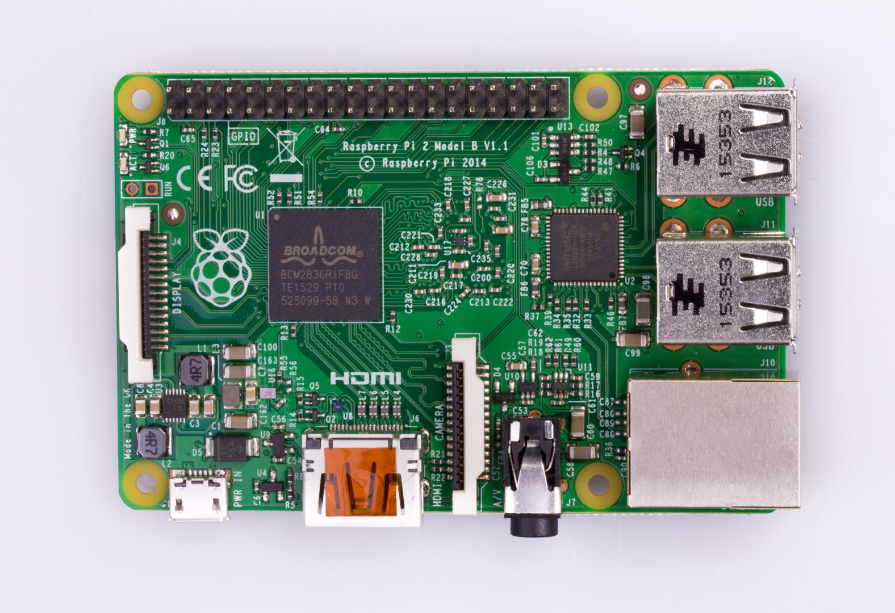

3/14/2019 (I guess it's pi day...)
Some helpful info for raspberry pi wanderings:
Wifi setup:
ifconfig - lists internet connections
sudo nano /etc/network/interfaces - place to put internet settings, mine is below
sudo nano /etc/wpa_supplicant/wpa_supplicant.conf - most tutorials
say to point interfaces to wpa_supplicant and put the network
information in there, but this didn't work for me
Login credentials:
user: pi
password: i****k
Shutdown command:

Raspberry Pi: https://www.raspberrypi.org/products/raspberry-pi-2-model-b/
more stuff